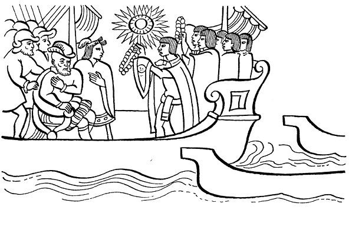
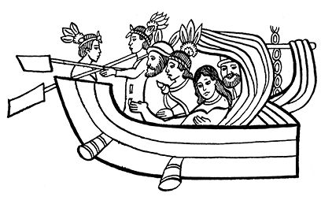

第三章 蒙泰古祖玛的信使往返于
墨西哥城和海湾之间
导 言
本章叙述印第安人，尤其是萨阿贡实情提供者们叙述的关于蒙泰古祖玛信使往返于墨西哥城与外来人出现的海湾之间并与之进行周旋的情况。第一部分摘录了《佛罗伦萨抄本》中关于蒙泰古祖玛对其信使的指示。这里清楚地表现了纳瓦人从传统的观念出发解释西班牙人的到来：他们认为是“我们的王子克查尔克阿特尔”率众回来了。
接着，印第安人在第二部分叙述了使者如何来到海湾，如何受到西班牙人的接待，如何向西班牙人转送蒙泰古祖玛的礼品。其中，印第安人描写的科尔特斯接受礼品时的情形和科尔特斯如何恫吓使者、当着他们的面放射火枪的情景尤为引人瞩目。
本章第三部分讲述了蒙泰古祖玛的使者回到墨西哥-特诺奇蒂特兰，向国王禀报西班牙人的长相，他们的大炮，他们的坐骑——一种无角的奇大无比的“大鹿”，还提到他们带来的大狗等等。
蒙泰古祖玛对其使者的敕令
接着，蒙泰古祖玛把古埃特拉斯特兰村的皮诺特尔和其他人召来，对他们说：
“你们命令下面的人好生看管叫作纳乌特拉、图斯特拉和米特兰瓜乌特拉的那几片海岸，他们（外来人）会从那里上岸。”
众主管急忙离开宫廷，前去命令下属好生看管海岸。
与此同时，蒙泰古祖玛召集他的王子们开会，他们是：西瓦克阿特尔·特里波通基、特拉克奇卡尔卡特尔·瓜比阿特辛、蒂索西亚瓦卡特尔·克察拉斯达辛、乌伊斯纳瓦特拉伊洛特拉克·埃卡特乌巴蒂特辛。国王向他们讲述了事情经过，并向他们展示了工匠们做的项链。
国王说：
“我们都很喜欢蓝色绿松石，那就把它保存好吧。那些专门保护宝石的人也会把它收好的。如果搞丢了一部分，他们住的房子就是我们的了，母亲怀里的孩子就是我们的孩子了。”
岁月流逝，转眼进入了13-家兔年。这年年底，大家发现外来人又出现了。
众人纷纷求见蒙泰古祖玛，向他禀告此事。获悉外来人再次前来的消息，国王赶紧准备派出使者。他好像认为来者就是他们的王子克查尔克阿特尔。
他内心思忖：但愿他一个人来，然后就走。他来是想看看他的宝座。所以他直接来此，到时就会走的。
蒙泰古祖玛派五人去寻找来者，让他们把礼物送给外来者。五人中领头的是一名祭司，此人来自尤瓦里察神庙；第二名是特波斯特兰神庙的祭司；第三名是迪迪萨特兰神庙的祭司；第四名乌埃乌埃特兰神庙的祭司；第五名是大米科特兰神庙的祭司。
国王说道：
“你们快来吧，我勇猛的骑士，快来！
听说我们的主宰又一次回来了。
你们快去迎接他们吧，对他们说你们正在认真聆听他们的讲话。你们确实要好好听他们讲话。”
献给来者的礼物
“你们要带着下面的礼物去见我们的主宰：
第一种礼品：克查尔克阿特尔的常用物件，它们是：
绿松石制的羽蛇神面具一副；
用克查尔羽毛编织的护胸一副；
针茅草编织项链一条，中间镶嵌一个黄金圆盘；
金制骨架的螺钿镶嵌盾牌一个，骨架是金质的。盾边和盾上的小旗衬有克查尔羽毛；
置于舞者后腰部的镜子一面，镜边衬有克查尔的羽毛，此镜像是一副镶嵌着绿松石的盾牌；
镶有黄金小铃、各式绿宝石制成的手镯数个；
镶嵌绿松石的投枪头数个，枪头全部为绿松石制成，形状有如蛇头。
黑曜石凉鞋一双。
第二种礼品：特斯卡特里波卡神的常用物件：
锥形黄金头盔一个，头盔上镶满星星；
金制响铃耳环一副；
精致贝壳项链一副，长抵胸部，四周镶有海螺壳；
彩色短坎肩一件，扣眼由细绒毛围成，就像一团团泡沫；
带帽斗篷一个，用蓝毛线缝制，此斗篷名曰“响铃”，在耳部可见突起，可以将斗篷拉紧；
斗篷背面镶有一面镜子；
金制脚铃一副；
白凉鞋一双。
第三种礼品：特拉罗坎·特库特里，即特拉罗坎统帅的常用物件：
绿色羽毛制假发一套，全部由克查尔羽毛制成，横箍上镶嵌黄金和贝壳；
蛇形耳环一副，由各色绿宝石制成；
短坎肩一件，上面镶嵌各色绿宝石；
针茅草编织项链一条，上面镶嵌各色绿宝石，中间镶嵌一个黄金圆盘；
后腰镜一面，下面系有数个小铃；
红色镶边被子一条，被上挂金制铃铛；
镶嵌绿松石的蛇状手杖一个。
第四种礼品：仍是克查尔克阿特尔常用物件：
作为头饰的美洲豹皮王冠一个，上装雉鸡羽毛，王冠上镶有大块绿宝石；
圆形绿松石耳环一副，每个环下吊着数个黄金或贝壳小环；
针茅草编项链一条，镶嵌各色绿宝石，中间镶嵌一个黄金圆盘；
红色镶边被子一条，被上挂金制铃铛；
金盾牌一个，中间孔四周镶嵌克查尔羽毛，还带克查尔羽毛小旗一面；
智者埃卡特尔专用手杖一根，弯曲面上星星般镶满白玉石；
羽毛绒饰拖鞋一双。”
以上所有物件打上“神徽”的标记，然后交给使者。此外，还有很多物件作为礼品表示欢迎来者的到来，如：
镶金海螺头盔一个；
金盾牌一个。
以上所有物件均摆放在数个大筐里，再把大筐放在木架上以便运输。
蒙泰古祖玛对那五位信使说道：
“快上路吧，别耽搁了。快去见我们的主宰，我们的神祇，见到他时对他说：‘您的属下蒙泰古祖玛派我们前来见您。您一到墨西哥他就给您备好了这些礼物。’”
使者会晤西班牙人
当他们一到海边，就有人把他们带上小船去了西卡兰克。
从那里水手们又把他们带上独木舟，他们把礼品也放在小舟里。
然后沿河而上，登上西班牙人的小船。
他们（西班牙人）问使者：
“你们是什么人？从何而来？”
“我们从墨西哥来。”
他们又问：
“你们可能从墨西哥来，也可能不是。你们可能只想欺骗我们队长，也可能想欺骗我们大家。”
但西班牙人心里早已信服，他们心里感到满意。他们在大船的船头上安装了一个大吊钩，把使者们直吊起来，再在船上放上梯子，让他们下到大船上。
使者们来到船上，把礼品也吊到船上。然后在队长面前行叩头大礼（此为他们表示敬意与发誓时才行的大礼）并说道：
“敬请我们的神垂听：您的仆人、墨西哥的首领蒙泰古祖玛向您垂首致意！他说：‘您实在辛苦，实在辛苦！’”

接着，他们给科尔特斯装扮了一番：细心地给他戴上绿松石面具，并用克查尔羽毛制的饰带系好。
在面具两侧各挂上一个耳环。
又给他穿好短坎肩，在他的颈项上挂上镶嵌绿宝石的针茅草项链，中间还有一个金盘。
接着，在他的后腰部用线垂下一面镜子，在他的背上披上名叫“响铃”的斗篷。
在他的脚部佩戴上瓦斯特克人常用的护腿甲，每个甲上都挂着金铃，上面缀满绿宝石。
还把一面盾牌放在他的手里，盾牌的把手是金的，镶满了螺钿。
还当着他的面给他穿上黑曜石凉鞋。
此外还将三个圣物摆放在科尔特斯的面前。
使者们做完这些事情之后，科尔特斯队长问道：
“难道这些就是所有欢迎我的礼物？送给其他人的东西在哪里？”
使者们答道：
“就这些了，我们的神，我们只给您带了这些东西。”
科尔特斯想恫吓墨西卡人
为此，科尔特斯队长下令把他们（墨西卡人）捆起来，在他们的脚上铐上脚镣，在颈上套上锁链。然后，开始放射火枪。
使者们顿时吓得神志不清，昏死过去，一个个蜷缩着倒在船上，半天也缓不过来。
西班牙人把他们拽起来，给他们灌酒，又喂吃的给他们，这样才使他们缓过劲儿重新振作起来。
见此，科尔特斯对他们说道：
“你们听着：有人对我说，你们墨西哥人都很骁勇，很能打仗，让人害怕。
说是仅仅一个墨西哥人就能吓退十个敌人，甚至二十个，吓得他们惊慌失措，迫使他们逃之夭夭。
我从心里想证实一下，看看你们是否果真如此勇猛，你们果真都是真正的男子汉？”
接着，他急忙把皮盾牌、利剑和投枪交到使者们的手里，说道：
“天马上就要亮了：我们双方分成两队，两两对打一番，这样就能看出谁更勇敢。看看谁先倒地！”
使者对科尔特斯队长说道：
“大人，可是您的仆人蒙泰古祖玛叫我们来这里不是做这种事的……我们来此的任务是专门为您找到住所，让您歇息，是让我们相互敬重的。大人，您想让我们做的并不是我们的责任。如果我们按您的吩咐做了，蒙泰古祖玛定会怒发冲冠，并了结我们的性命。”
科尔特斯队长紧接着说道：
“不！你们必须要按我的话做！在卡斯蒂利亚，人人都说你们个个身强力壮，能征善战，我想看看你们是否果真如此，果真让人见了赞叹不已。现在趁早赶紧吃饭，我也饿了。快！”
接着，他进行了安排，让他们下到墨西卡人的小船上。谁知，使者们刚刚来到自己的船上，便拼命地划起桨来，甚至还有人用手当桨划水，心中恐惧万分。他们匆匆相互说道：
“各位首领，我们得拼命划船了。这里可千万别出事，但愿我们不出什么问题！”
使者们快速地从海上划到特克潘特拉亚卡克，从那里上路，来到瓜特拉斯特兰。回来的路和去时的大体一致，这时他们总算松了一口气。
古埃斯特拉斯特卡对他们说：
“大家总得在这儿休息一天，歇口气吧！”
但是使者们说：
“不了，我们还有急事：我们要向国王蒙泰古祖玛汇报，向他上报我们所见到的一切让人吃惊的东西。这些东西过去谁也没有见过。难道你听说过吗？”
使者返回墨西哥
接着，他们又匆匆上路，直奔墨西哥。直到天黑才到达目的地。
这段时间，蒙泰古祖玛寝食不安，也没人和他说话。他做什么事情好像都心不在焉。他不停地叹息，情绪低落，垂头丧气。
他整天沉默不语，没有任何事情能使他愉快，他对所有的事情都失去兴趣。他整天不停地念叨：
“什么事会降临到我们头上？谁能真正活下来？
啊！我梦里曾去过……我太伤心了，我的心在燃烧，就好像被浸在辣椒里一样，令我焦灼不安……我们的主宰到底要到哪里去？”
他对守护其财产的官员下令：
“即便我睡着了，他们回来时，你们也要叫醒我，向我通报，我曾命令出海的人务必返回。”
但是当官员前来通报时，他却立刻说：
“我不想在这里见到他们，我要在蛇宫听他们禀报，让他们先去那里！”
接着他又发下话来：“在两个俘虏身上涂上漂白土！……”
五个使者遵令前往蛇宫，蒙泰古祖玛随后也去了。在他面前走过即将被祭的俘虏。俘虏的胸膛被打开，鲜血溅了使者们一身。
杀人祭祀的原因是因为使者路途艰难；因为他们亲眼看到了“天神”；因为他们亲眼目睹了“天神”的面容和头颅；更主要的是他们与“天神”进行了交谈。
使者的见闻
祭祀后，汇报开始。他们向国王讲述了所见所闻。所有的一切都使他十分惊讶，他们还讲述了神祇们吃的东西。国王听后颇为奇怪。
当听到神祇们如何放枪，声响如何震天，如何使人吓昏的时候，国王惊愕不已，不知所措。
当他们放枪时，一种像石头一样的东西从枪膛弹射出来，带着熊熊火光，伴随着火花纷纷降落。另外，从枪里冒出的烟，有一种腐烂的味道，臭气熏天，直冲囟门，使人极不舒服。
如果子弹击中小山，山石会崩溅，小山会被劈开；如果击中大树，树干会顿时变成碎片，四处飞溅。子弹好像有人向枪的内部吹气时射出的那样有力，看了让人惊叹不已。
他们所用的武器都是铁制的：铁铠甲、铁头盔、铁利剑、铁弓箭、铁盾牌、铁投枪。
他们的坐骑是一种“大鹿”，这种“大鹿”有房梁那么高。
他们无论到什么地方，都把身体裹起来，只露出脸。他们面色白皙，有如石灰；头发黄色，也有的人头发是黑的；胡须很长，也是黄色的；头发细而卷曲，呈波浪形。
关于食物，他们的食物和我们的一样：块大、色白、不重，轻重就像玉米秆一样，味道微甜，像加了少量的蜜，有如玉米秆芯的甜味。
他们的狗奇大无比，耳朵扁薄，呈波浪形；舌头很长，耷拉在嘴外；眼睛色黄，十分明亮，像是在不断喷射火舌。
狗的肚皮形长、内凹，就像刨槽的树架。
它们健壮有力，一刻也不消停，经常伸出舌头，喘着粗气。身上有多色斑纹，很像豹纹斑。
蒙泰古祖玛听完使者的叙述，吓得心惊肉跳，魂不守舍，差点儿昏死过去。
